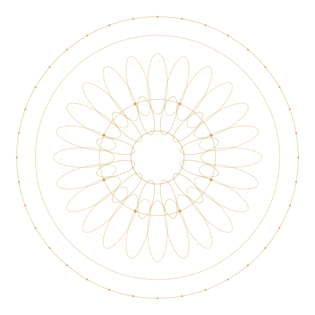

About this edition
A quiet place
for a long poem.
This is a reading edition of the Valmiki Ramayana, assembled from the complete Sanskrit, Roman-diacritic, ITRANS and prose pages published at valmikiramayan.net. It is meant to make the whole epic navigable, readable and beautiful on a screen — for study, for recitation, and for devotion.
What is here
The text
Six kandas, 20,102 shlokas and 534 sargas, each with a page of its own. Every shloka is shown in Devanagari, IAST and English, with the translator's word-by-word gloss and commentary available in an accordion beneath it.
The guide
An insights page measures the epic's shape; a character index records first appearances and mentions; and a search page finds any sarga or figure by name.
How it was made
The short technical history, kept here so the edition can be checked and rebuilt.
All 2,142 source pages — four views for each of 534 sargas, plus the six kanda contents pages and the site index — were downloaded and archived as HTML. Every page returned HTTP 200. The parser then read the Sanskrit, IAST, ITRANS and prose pages for each sarga, repaired double-encoded text where necessary, and merged the views verse by verse.
The site's inline references are inconsistent: the kanda digit varies, some sargas are shifted by one, and some verses are grouped. The parser therefore takes the Verse Locator table on each Sanskrit page as authoritative, then matches each verse block to a number by reference, by anchor, or by position. The total is 20,102 shlokas across the six kandas.
Devanagari is present for 20,094 of 20,102 shlokas (99.96%). English translation is present for 18,254 shlokas (90.8%); where the source groups verses or leaves a translation blank, the Devanagari and IAST are still shown in full. Uttara Kanda is not part of this source, so the edition contains six kandas rather than seven.
The Sanskrit text, English translation, word-by-word gloss and notes are from valmikiramayan.net, © 1998 Desiraju Hanumanta Rao, revised 2005. This site is a non-commercial reading interface built for personal study and devotion, and is not affiliated with the source site. Please consult the original pages for the authoritative text and for the translators' full notes.
The reading edition's typography uses Literata, Marcellus and Tiro Devanagari Sanskrit, all under open font licences. The charts are generated from the parsed data; the mandala and lotus ornaments are original SVG drawings for this edition.

धर्मो रक्षति रक्षितः
dharmo rakṣati rakṣitaḥ
Dharma protects those who protect it.
A familiar maxim of the epic traditionBuilt 2026-11-17